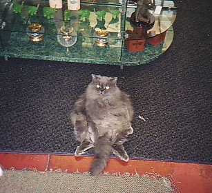
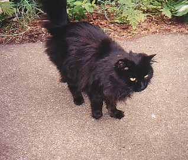
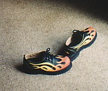
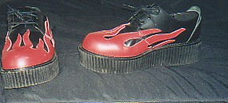

|
He's back....Erik, one of the first people who started reading my blog and left comments on a regular basis, has a new blog online! He took his old blog offline months ago, and I really missed reading it...it'll be fun to be able to read his blog again and see all of his new artwork.
The family cookout was fun last night, but we ended up not playing with the ouija board. We were too busy talking about other things! I've been enjoying family cookouts a lot more than I used to, I'm not sure why. I used to dread family gatherings up until high school, I was a really shy kid. Actually, I still think I'm a rather shy person. I'm usually not one to start up a conversation with someone I don't know, but if a person starts talking to me I'm quite a chatterbox! I must look like a friendly person...people start conversations with me all the time - in the elevator at work, at the grocery store, when I'm walking through the park, etc. Also, sometimes these strangers tell me way more personal stuff than I need to know! But it is interesting to meet people this way, so I don't mind at all!
Mark and I were going to go to a flea market this morning, but it was raining really hard so we ended up not going. Since I didn't get much sleep last night (mainly because I was having fun talking online with Tim!) I went back to sleep for a little while. I also had a terrible headache, so the sleep combined with 3 excederin migraine pills really helped! Then later today I went down to my parents' house again. Since my parents, Mike, and myself drove my sister around a lot while her car was in the shop for a month, Katy insisted on taking us out to dinner as a thank you gesture. She really didn't have to buy dinner for us, it's not like driving her around or letting her spend the night here was an inconvenience, but she was determined to pay tonight. That was EXTREMELY nice of her!
Around 5:00 this evening the terrible headache I had early this morning came back. My head is pounding. It's probably due to a combination of allergies and a lack of sleep. So I think here in a little bit I'm going to take some excederin PM (that stuff is great!) and call it a night! Hopefully tomorrow I'll feel better and I can get some work done around the house and on the webpage!
|
************************************************************************
First, let me tell you that I am only 25.44379% geek. I was really proud, because I thought 25% was a really low precentage of geekiness for someone to have. Then Michelle, one of my friends at work, told me that she was only 11% geek and suddenly my score didn't seem as quite as great!! :)
Some of you may remember my post from October 6, 2002 that listed the reasons my friend Chrissie thinks I'm a redneck. Well, last night's adventure to Mark's house wouldn't help me prove that I'm really not a redneck! I went to Mark's place to see his new 1999 Monte Carlo. He hasn't named it yet, but I think he might name it the Maroon Monster! Anyway, after I got to see the car and after we talked for a little while about all of the stress that Mark has been dealing with lately, we decided to order a pizza. I actually managed to force Mark into letting me pay for dinner (usually he insists on paying since I'm usually over to help him haul furniture and stuff in my truck)! Then we watched two episodes of....you'll honestly never be able to guess......
The Dukes of Hazzard!!!!!!!!!!!!!!
I'm sure Chrissie will think watching that makes me a redneck. I disagree, lots of people used to watch the Dukes of Hazzard. Mark has taped almost every episode of the show, it's his favorite. I hadn't watched it since I was about 4 or 5 years old, but it was one of my favorite shows back when I was a kid. I can't say that it's one of my all time favorite TV shows like Mark says though! He could watch those old episodes every single day and not get bored by them! He also thinks that the actors who play Rosco and Boss Hogg are the best actors ever...I most definitely can't say I agree with that! I sure wasn't expecting to sit around and watch the Dukes of Hazzard with Mark last night, but it really was a fun time!
There's a chance that I may be using the ouija board at a family cookout this weekend. My mom has been telling my aunts and uncles about all of the "contacting the dead" parties, and I guess they're all really interested in it! So my mom called last night and asked if I'd be willing to bring it to the cookout. I never thought I'd have a ouija party with my aunts and uncles, it's not a really common thing for families to do! It'll be interesting though, that's for sure!
|
************************************************************************
I just found out that yes - there are some spider species that are white. I found a site with tons of spider pictures, after looking through it I'll probably have spider nightmares for months! Here's the link: http://www.rochedalss.qld.edu.au/spiderphotos.htm.
Here's a picture of the most horrifying white spider on their page:

|
************************************************************************
Last night I had a dream that I was being chased by a gigantic spider. It was terrible. I was walking in the woods behind my great uncle's old place, when all of a sudden I saw a big white insect leg come stomping down in front of me. I looked up and I saw the spider - it was a huge albino spider. It towered above all the trees. It had evil, glowing red eyes and big fang-like things. I started to run away, off the path and through the trees. I couldn't get away from the spider though, it was always right behind me. Then I woke up. It's been years since I have had one of these spider nightmares...I used to have similar nightmares all the time when I was a kid, but they stopped by the time I was 5 or 6. In those dreams it was always a white spider too. I've never seen a white spider in real life, I wonder if any really do exist? Sounds like something I'll have to research!
It's kind of funny that I such a terrible dream last night - I had a conversation about nightmares on AIM with Tim, just a few hours before I went to sleep. Of course, after talking with him, I can't complain too much about my spider nightmare...his latest nightmare was a lot scarier!
|
************************************************************************
So far this week has been one of the worst of the year as far as being bored at work goes. Not only did I have to sit through the terribly boring department meeting yesterday, but today I had to sit through a boring division meeting. At least the division meeting was only an hour. Other than that my day was OK I guess. Well, take that back...I forgot to pack my lunch today so I ended up going down to the cafeteria. I got a chicken sandwich, which is usually one of the safe menu items. However, today I ended up getting the worst chicken sandwich that I've ever had. It was cold, it had a big vain in the middle of it (I'm really grossed out by vains in chicken), and it was burnt. So I ended up throwing over 3/4 of it away. Oh well.
I hope I didn't gross anyone out by mentioning the vain in my sandwich. That's one of the subjects a few friends and I end up talking about a lot at work...there are several of us that have issues when it comes to eating chicken with bones, and since it's not uncommon to find vains in chicken with bones that starts our discussion about all of the gross things we've found in chicken (even boneless). Really though, none of you should be surprised that we have discussions about things like that...afterall, we're the same people who researched tapeworms during one of our breaks!
I'm having trouble thinking of things to blog about tonight. Wait...I just remembered that I forgot to write about the strange things that have happened since I brought one of my great-grandma's lamps home on May 16th. I haven't taken a recent picture of it, but here's a picture I found in their old house, I'm guessing it was taken sometime in the early 1950's:

I'll take a more recent picture of it soon. It's not an extremely fancy lamp...it's metal, and it's black and silver stripes. Anyway, the socket needed replaced, and it definitely needed a new cord. I went to Lowe's and found all the stuff I needed to fix the lamp. I was a little worried that I'd install the new socket and cord and blow up the house when I plugged it in, but I underestimated my lamp repair abilities. I plugged it in, and nothing blew up when I turned it on. However, the next day different lights throughout my apartment kept turning on and off. My mom helped me think of logical explanations, and the only one she could come up with was that maybe I shorted something out. However, since the lights that were turning on/off weren't in the same room let alone the same section of the apartment I doubt that was the reason. Also, I didn't even plug the lamp in when I took it into my bedroom!! The lights in my apartment just stopped turning on and off this past Sunday.
Saturday night I brought some of my great uncle's old school books home. Nothing happened all weekend, but tonight when I got home from work they were lined up across my living room. I put them back in the box. I went into my computer/frog room and a bunch of my books were lined up across the room!! I haven't told my sister that....she sleeps in the computer room when she spends the night at my place so I didn't want to freak her out!
|
************************************************************************
So I started my research on sock fetishes by doing a Google search on the phrase "sock fetish". I don't think all sock fetishes are as innocent as they sound! Most of the sites were labled "mature content", go ahead and click on the link above if you really want to see a list of the sites that came up! I did find one interesting sock related site that wasn't porn though. It's called My Sock Drawer, and it's hilarious! They even have a "socks of the week" section!!
|
************************************************************************
I managed to survive the day at work, but I must say that it wasn't easy. The first half of the day went really fast, but the afternoon was terribly slow. We had a two hour department meeting that was like torture to me. We were stuck sitting in the uncomfortable cafeteria chairs while our upper management talked to us about last quarter's profits, whether or not we made the goals, what sales has in store for the next quarter, etc. I'm sure there are a few people that think this information is interesting...I'm not one of them! I think I tuned out and started daydreaming after maybe two minutes. Sure, there were a couple of things that caught my attention - like new job titles and the presentation's about each division's MWI's (Most Wanted Improvements). But all of that maybe took half an hour. I'm thankful that we only have those meetings quarterly! Of course, I think tomorrow or Thursday we have a division meeting...those are a little better, but not much. What can I say, I guess I'm just not a big fan of meetings. I'd rather be testing!
Maybe the meeting wouldn't have been so agonizing for me if I had gotten more sleep last night. I had some really strange dreams, but I only remember one of them. I was at my parents' house, but for some reason their house was replaced with Nationwide's downtown parking garage. It sat exactly where there house was supposed to be. But wait, it gets stranger. I was running through the garage, and after what seemed like an eternity of circling around the floors I made it outside. It was dusk, and it was also Halloween. There were a bunch of kids in costumes waiting for me outside of the garage, and they wanted me to walk them to the top of the hill behind my parents' house so they could go trick-or-treating. I walked up the hill with them, and when we made it to the top my dad jumped out from behind a tree and screamed. He was wearing a black hooded cloak and he had these green rubber glow in the dark arms with black finger nails on. The rubber arms were really quite disturbing and the kids screamed and ran back down the hill. My dad was laughing hysterically. All of a sudden I felt bugs crawling all over me....I started to brush them off and quickly realized that I couldn't because they were attached. I was covered with hundreds of ticks!!!! I was pulling them off of me by the handful. Finally I got them all off (actually, it didn't take very long). Then my dad told me that I needed to take the wiener dogs for a walk, and I was instantly taken away to Lancaster, Ohio's historic district (with all three wiener dogs on leashes of course). However, it wasn't modern day Lancaster, it was like I was there in the 1800's or something. People kept giving me strange looks and whispering behind my back because I was dressed in jeans and a t-shirt rather than a poofy dress (like all the other women were wearing). I ignored them and walked into a small shop. I bought a painting of a boat, and then I woke up. I have NO idea what caused that dream! Hopefully tonight I'll sleep better and won't dream about ticks!
I was telling a few of my coworkers about my dream, and that made Kitty think about a scary experience she had this weekend. Her daughter saw a centipede in their hallway. I have to agree with her, centipedes are absolutely disgusting. They rank right up there with spiders on my list of things that I'm terrified of! So far I've never seen a centipede at my place...I wonder if spider killer plus spray would kill them? I'll have to read the spray can to find out. If it doesn't kill them I'll need to make a trip to Target to find a spray that will kill them, because you all know that I can't get close enough to smash one!
I think I'll scan some more cemetery pictures and get them out here on the site by the weekend.
|
************************************************************************
One more thing before I get back to work...
My blog is on the first page of matches for the phrases "sock fetish female" and "white sock fetish". That's funny since I've never written about having a sock fetish, but I do think I've used the words "fetish" and "sock" in my entries. I'm kind of curious to know more about sock fetishes since people are finding my site looking for info about them - I may just have to do some research on this!!
|
************************************************************************
Even though I was at class last week and still technically at work, it's still been tough being back in the office this week...and it's just 8:00AM!
I'll post more tonight, but here are the answers to my This-or-That questions of the week:
- Do you prefer silence or do you like background sound (music, TV, etc)?
I guess it depends on what I'm doing. At work I like to listen to CDs with my headphones on (so the lyrics don't offend any of my coworkers), and I also listen to music or the TV while cleaning. However, if I'm reading I prefer silence.
- Bathe/shower in morning or evening?
I take a shower every morning. Sometimes I'll take a shower in the evening too, especially if I've spent my day exploring a dirty, abandoned building!
- Sleeping in complete darkness, or with a nightlight on?
Definitely complete darkness!
- Lay out clothes the night before, or just grab what's closest in the morning?
I try to lay them out the night before, but I usually end up picking something different to wear the next morning.
- Hang up/fold clothes neatly, or just toss them wherever?
Hang up/fold neatly
- Work out at a gym, or at home on your own (or do you not bother with exercise)?
I walk every night.
- Talk on the phone, or via IM/e-mail?
I'd rather talk via IM/e-mail, but I end up talking on the phone more than I'd like.
- Are you usually on time, or late?
I'm usually early!
- Spendthrift or frugal?
I'm kinda in the middle.
- Thought-Provoking Question of the Week: You work with someone who is not in the habit of bathing regularly. The smell seems to be getting worse and worse! Would you: 1. try to do something about it, or 2. try to grin and bear it? If you said 1, what would you do?
Luckily I've never been in this situation! I guess I'd try to do something about it. I'd worry about upsetting the person, so I'd probably talk to my manager about it and let him handle it. Afterall, he's paid to handle stuff like that, right?
|
************************************************************************
I see these This-or-That questions in other people's blogs, so I thought I'd go ahead and start posting my answers weekly too:
- Large or small family?
My family is small, and if I ever have a family of my own I want it to be small as well.
- Potato chips or pretzels?
BBQ Potato Chips
- House or apartment?
Apartment, but I'd like a house eventually
- Zebras or giraffes?
Zebras - I like stripes better than spots
- Candles or potpourri?
Candles - I think the smell lasts longer, plus I like fire!
- Flowers or trees?
Flowers, especially fragrant ones
- Right or left-handed?
Right
- Model trains or dolls/stuffed animals?
I don't really like either, but if I had to chose one I'd pick stuffed animals. Now if it had been toy cars instead of model trains it'd be a totally different story!
- Comedy or drama?
Depends on my mood, I like both.
- Thought-provoking question of the week: The city of Boston has recently banned smoking in all restaurants and bars. Would you want to see such a law passed in your city/town/country, or not?
Yes, I would like a law like this passed. Since nonsmokers are the minority anymore and since second hand smoke can be harmful, I don't think it's asking too much for smokers to wait until dinner is over before smoking. Or if they can't wait they could always sit outside instead of ruining the dining/bar environment for everyone.
|
************************************************************************
I'm sure none of you will believe this was the outcome of my nerd test (said very sarcastically):
take the nerd test.
and go to mewing.net. a nerd utopia.
|
************************************************************************
I've been promising to post a few pictures, so here you go (I put a description under each picture):

Meet the "Budda Cat" - Susan and I saw this cat at The Labyrinth's Beltane Festival in Middletown, OH. The owner told us that the cat sits like this all the time!

This is the cat that has been hanging around my apartment (the one I wrote about yesterday).
The gravestone shaped soaps I bought to help complete my bathroom's cemetery theme.

The red/orange/yellow flame shoes I wrote about last week.

The red flame shoes I also wrote about last week.
Tomorrow morning we will finally finish the networking unit of the CIW Foundations class. Then we'll move on to the fun stuff - internet fundamentals and webpage authoring. Those two topics are the main reason I wanted to take the class. Well that and getting certified of course!
I haven't seen the black cat all day. Maybe the rain has been keeping her away?
I posted the new ouija transciptions on the site, and I posted the URL's on the Updates page. It was fun to listen to the recording last night, I had already forgotten about some of the things the board spelled out!
|
************************************************************************
I finally had the chance to add some new pages to the site. You can see the list of new pages by clicking here. I didn't get a chance to type up the Ouija "transcripts" from this past Friday's contacting the dead party. I'm going to try to get them added to the site sometime tomorrow, probably tomorrow evening.
Here's my latest problem. I have a stray cat hanging around my apartment. I remember seeing it before, but it used to wear a collar and run away when I walked outside. However, now it no longer has a collar on and it comes up to me everytime it sees me. My guess it that the people who used to own it moved away and left the poor cat behind. I felt bad for it last week because it kept meowing, so I fed it tuna (since I don't keep cat food around!). Now it won't leave me alone. It stays outside my apartment and meows a lot, and it's even tried to jump inside. I definitely don't want a cat, and even if I did I couldn't keep it since my apartment complex doesn't allow cats or dogs. So I'm not sure what to do. I'm not 100% sure (just 90%) that the cat's owners are gone, so I'd feel bad taking it to the humane society. Besides that, I hate paying to get rid of an animal that's not mine. I think I'm just going to ignore it and never feed it again, maybe then it will leave me alone? I know that sounds heartless (at least that's what my mom thought, she thought that about the humane society too), but I don't know what else to do!!
Today's CIW class went pretty good. We talked about networking, which doesn't interest me at all, so it was a little boring. But tomorrow we will finish up networking and move into internet fundamentals. Should be interesting.
|
************************************************************************
This week I'm taking the CIW (Certified Internet Webmaster) Foundations course. The class is downtown, which is so wonderful! I've worked at the Rings Road building for over a year now, and I still miss working downtown. Maybe Rings wouldn't be so bad if there were places to walk to. If you don't feel like driving anywhere and losing your parking spot you're pretty much trapped in the building all day.
I have some updates to make to the site, I think I'll have time to get the new pages out here later tonight. This time it's just cemeteries, no buildings, and all but one of the six are from Lancaster. They're pretty cool cemeteries though. One of these weekends I need to plan a trip to Zanesville and New Concord. Someone sent me directions to a bunch of old cemeteries in that area. One of them is called Crooked Creek, which is an awesome name! And I still want to drive down to Point Pleasant, WV soon...the people who live there (at least the ones who have contacted me) are SO friendly and helpful with giving me Mothman and Lakin Hospital info.
We had another Ouija party this past weekend, this time we used the board inside and outside of my great grandparents/great uncle's house. So I'll try to add that to the site soon too.
Today is my birthday, and so far it's been a pretty good day. My mom has sent me a couple of notes today, reminding me how sore she felt after she had the C-section to have me!
Hoppy Together is officially gone now. It is a little sad to get the DNS error instead of the happy little frogs, but I don't think I'll feel sad for long....I have too many things to keep me busy with this site!
Anyway, I'll probably post another entry tonight.
|
************************************************************************
Giving up Hoppy Together is a little sad, because I have put a lot of work into it. I'll be sure to post fun pictures of the frogs here in the blog though, so don't think I'm totally giving up on the poor little froggies.
It's been almost a month since I've blogged!! Things have been extremely busy, especially at work. I still like the area I work in, but I am starting to feel...well, "stuck". And feeling like I'm stuck in a job in which I'll never have a chance to be promoted because I don't "toot my own horn" (I'm quoting one of the managers I used to work for in QA) makes me feel a little stressed. But hey, at least I have a job....that's really good considering all the layoffs that big companies have been having lately.
Hmmm, what else has been going on since the last time I blogged?
Last week I stubbed the middle toe on my right foot, and I think I may have really hurt it. It was really sore through the weekend, and lately it feels almost numb at times. It doesn't hurt, but it feels strange. Have you ever stepped on a sticker or tape and had it stuck on your toe? When that happens the part of the foot the sticker is on doesn't get much feeling in it when you walk...that's what my middle toe feels like. Like I said though, it doesn't hurt and it's not discolored or anything so it must not be too serious. I really am a pro when it comes to injuring my feet! I just hope this toe doesn't turn into a "weather toe" like my left big toe (if you don't know what I'm talking about read through some of my earlier entries)!
My sister was in an accident about two weeks ago. She wasn't hurt, but her car was. It's in the shop, but it won't be fixed until sometime near the end of the month. She hasn't gotten a rental car because the whole situation is really strange and we're still not sure who is liable. So the poor little girl has been without her own transportation. My parents have been dropping her off and picking her up from work, except for the night she has class. That night she's been staying with me since I'm closer to the school than my parents. It's been fun having her over, and it's really interesting to see what kind of ghostly activites happen while she's here. Last week Katy accused me of knocking on the bathroom door while she was in the shower. However, I was downstairs so it couldn't have been me. Also, one of the coffin shaped soaps I have in that bathroom (yes, I have a cemetery theme for the bathroom...I am a freak!) kept falling off the soap dish. I thought that maybe Katy had used it and it kept slipping off because it was wet, but the soap was totally dry. It had never moved before that, and it hasn't moved after that. The spirits always seem to be obsessed with the bathroom whenever Katy's in it. I wonder why???
I've still been having lots of strange things happen, mostly things being moved off tables and shelves, or out of closets. The objects are then lined up in straight rows on the floor. I guess the spirit is a real neat freak! If only I could get them to organize the entire house without moving everything to the floor!
I think the tombstone I brought home last month is happy outside in my garden. My plants are doing FANTASTIC! My columbine, which usually blooms and dies after a week or so has been constantly blooming for about four weeks now! I'll have to take some pictures and post them here. I have a picture of the tombstone, I just need to find it so I can scan it and post it out here. I'll try to do that tomorrow night.
One last ghost item, then I'll change the subject. Last week Amanda, my mom, and myself all used the ouija board at my grandma's old house. We had some interesting answers. I put the transcript out on the Ouija Stories page. We're having another "contact the dead" party this week....we may even try using the board at an old, desolate cemetery where some of my relatives are buried!
My search for a new pair of obnoxious shoes finally came to an end two weeks ago! I have two new pairs, and they both have flames on them! I'll have to post pictures of them too :) One pair is black with red flames, and the other is black with orange and yellow flames. I think the Demonia shoes with the red flames are my favorite, they even match my website! Wow, I really am a geek if I'm buying shoes that match my website, huh?!
Next Monday, 5/19, I'll be 24 years old. Someone asked me if I'm starting to feel old, but I'm really not. Getting older doesn't stress me out like it does some people.
I'm planning to redesign the blog a little, so you can expect that too. It's so great to be blogging again!
|
************************************************************************
It was a tough decision to make, but I've decided that I will not be renewing the domain name for hoppytogether.com. It's been a fun site to have, but lately it hasn't been as much fun. Too many people complaining about the type of frog they're looking for not being on my site, people asking me too many frog illness/injury questions, and just general complaints. I've gotten tired of dealing with it so I'm calling it quits so I can spend more time working on this site. See, there are only so many frog pictures you can post before it gets boring. I've reached that limit. I will always have plenty of cemeteries and haunted/abandoned places to explore and take pictures of, so I don't see myself getting bored with this site for a long time!
Now that I've moved my blog to Grave Addiction, you can expect me to post more often...as long as I stop living at work like I have been lately anyway! But since I'm at work right now, I better put on end to this post and wait until my 7.75 hours is up before I blog more :)
|
************************************************************************
|